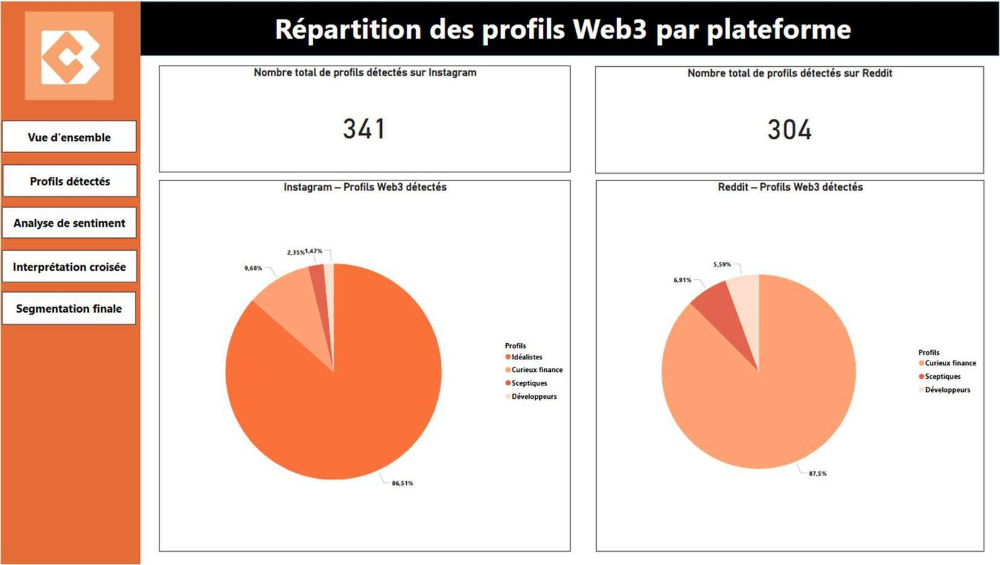
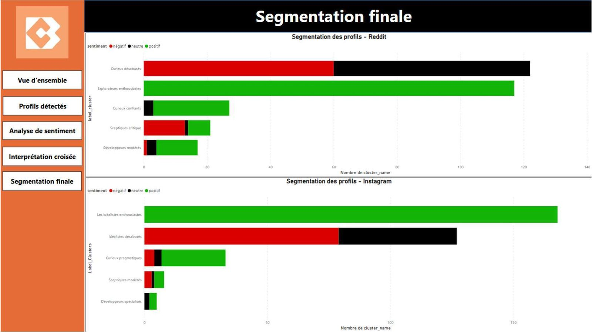
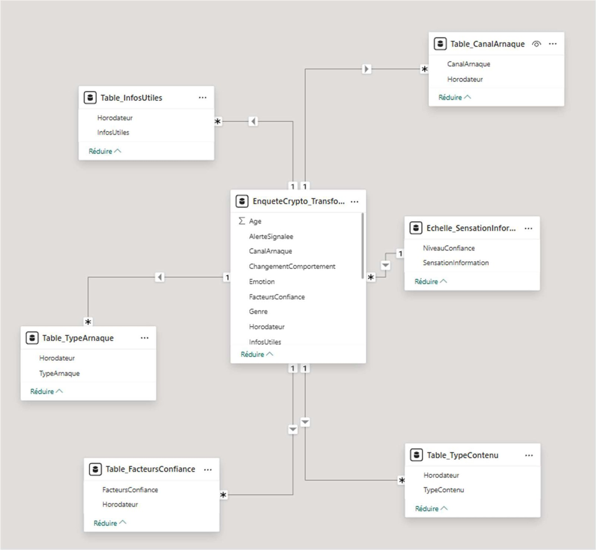
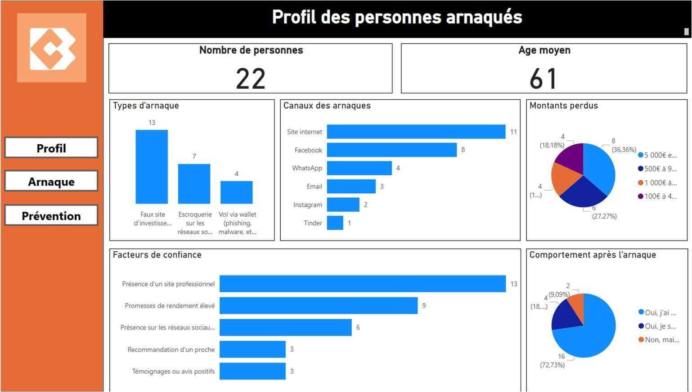
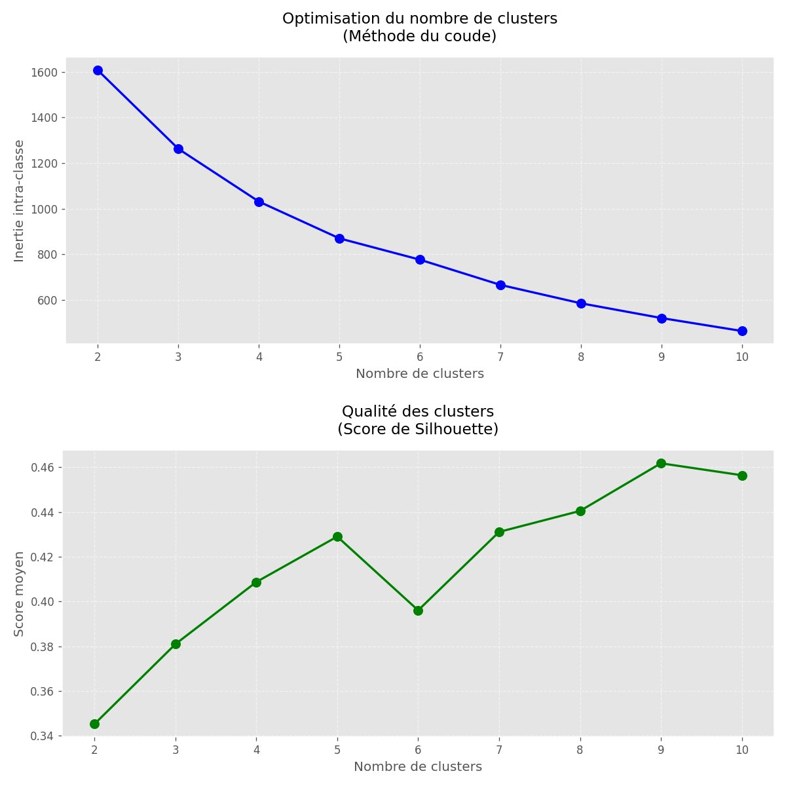

Case study · Marketing research · Data · BI
Cryptobel
Who talks about Web3, and how should Cryptobel speak to them?
Final-year thesis · partner organisation · team of twoFinal-year thesis of my Business Data Analysis specialisation, carried out with Cryptobel, a Belgian non-profit that helps the French-speaking public understand crypto safely. Starting point: 1,985 public Reddit and Instagram messages. End point: six audience profiles and a communication plan for each of them.
PythonSQL · SQLiteNLP · CamemBERTK-meansPower BIGoogle Forms
01 · Context & challenge
An organisation that educates about crypto, in a market where adoption and scams grow together.
Cryptobel, founded in May 2023, offers training, webinars, a phone line for questions and scam reports, and events such as the Crypto Brocante. Its public is mixed: by its own account about 40% seniors (a quarter of them scam victims), 30% working adults looking for investment guidance and 20% young people who arrive through Instagram.
The timing matters. About 17% of Belgians hold crypto-assets (Adan & Deloitte, 2025), yet trading and crypto platforms accounted for roughly half of the investment-fraud reports received by the FSMA in the second half of 2024, around €12.5 million of declared losses. People want to understand, and they want to avoid being trapped.
Cryptobel communicated actively on several channels but had almost no structured knowledge of who its audience was, what each group was looking for and how it talked about crypto. Without that, every message was written for everyone.
How can Cryptobel identify and segment its French-speaking audience to make its communication more effective?
02 · My role
A two-person thesis. Here is what I did.
I owned the data side from collection to dashboards. The interviews, the recommendations and the written report were shared work.
My work
- Collection scripts: Reddit API (PRAW), Instagram via Apify, scheduled runs
- Cleaning and preparation in Python, storage in SQLite
- Sentiment analysis (CamemBERT family) and TF-IDF features
- K-means clustering and its validation
- Reading and naming the clusters
- Power BI reports: audience analysis and scam-victim study
- Star-schema model for the questionnaire data
03 · Method
Listen to what people write in public, then let the data group them.
Instead of a survey of Cryptobel’s followers, we analysed how French speakers actually talk about crypto on two very different platforms: Reddit, where people argue and ask questions, and Instagram, where they react and share. Six steps, in plain words.
- 01Collect1,985 public posts and comments: r/CryptoFR and r/BitcoinFrance (daily), five French-speaking crypto accounts on Instagram (three times a week). Public content only, no personal identifiers.
- 02CleanEmojis, links, hashtags, mentions and filler words removed; French-language messages only. 645 messages were rich enough to analyse.
- 03EnrichEach message received a tone (positive, neutral, negative) from a French language model, plus four scores measuring how close it was to a developer, an idealist, a curious investor or a sceptic.
- 04GroupK-means clustering, run separately per platform. Five groups each, a number validated by the elbow and silhouette methods.
- 05InterpretFor each group: its size, its tone and its most frequent words. Groups with the same discourse were merged into six profiles that a marketing team can name and address.
- 06RecommendPriority segments, a tone and formats per platform, and an action plan, all visualised in Power BI for the Cryptobel team.
What cleaning does to a real message
Raw text
🔥🔥 @cryptobel ça c’est trop stylé les gars !! #Bitcoin #Liberté https://bit.ly/walletKept for analysis
stylé gars libertéTwo choices worth explaining
A French model rather than a word list
Simple tools score words one by one and are built for English. A CamemBERT-family model reads the whole sentence in French, which matters for slang, typos and irony.
K-means rather than HDBSCAN
HDBSCAN was tested first. It labelled many messages as noise and produced tiny, unstable groups. K-means gave stable, readable groups and let us compare the two platforms with the same number of segments.
See the validation charts: Evidence 05 →04 · Insights: the six audience profiles
Six ways of talking about crypto, and what each one asks of Cryptobel.
Shares are the weight of each group among the analysed messages of its platform. Tones come from the sentiment model. A profile describes a way of speaking, not a fixed type of person.
Instagram49% of Instagram · all positive
Enthusiastic idealists
Who they are
They see Web3 as freedom, community and opportunity. Short, confident, future-oriented messages: “buy”, “best year”, “the world”.
What it means for Cryptobel
The natural relays of the brand. Mobilise them with stories, member testimonials and participative campaigns, not with tutorials.
Instagram37% of Instagram · 62% negative
Disillusioned idealists
Who they are
Same values, but tired or disappointed: they talk about the market, paying, missed trains. They have not left, they are waiting for something honest.
What it means for Cryptobel
No overpromising. Re-engage with transparent, proof-based content that also names the risks and the past mistakes of the sector.
Reddit40% of Reddit · half neutral, half negative
Cautious financial explorers
Who they are
The largest group. They ask about wallets, fees, Binance, Ledger, transfers. They want to understand before they act, and they fear making a mistake.
What it means for Cryptobel
The priority segment. Step-by-step tutorials, security guides, comparisons, and quick personal answers by phone or WhatsApp. Reassured, they become loyal.
Reddit38% + 9% of Reddit · 89–100% positive
Enthusiastic financial explorers
Who they are
Already active: they use the platforms, compare Kraken, Coinbase and Ledger, share their experience and look for better returns.
What it means for Cryptobel
Advanced guides, tool comparisons, a specialised newsletter. The base for a long-term relationship built on usefulness.
Reddit · Instagram6% of Reddit · 1% of Instagram · mostly positive
Technical developers
Who they are
Smart contracts, wallets, security, Phantom. Calm, precise, educational. Few messages, strong influence on the others.
What it means for Cryptobel
Potential partners and speakers: webinars, open resources, invitations to events. Convince them with quality, not emotion.
Reddit · Instagram7% of Reddit · 2% of Instagram · 62% negative
Critical sceptics
Who they are
Scams, manipulation, loss, “never again”. Often speaking from a bad experience. Angry or ironic, but not closed to dialogue.
What it means for Cryptobel
Do not ignore them: they point at real risks. Sober, factual communication, no marketing promises. Treat them as an alert, not as a problem.
Two platforms, two audiences.
The same topic produces two different conversations. On Instagram, idealists dominate and the tone is emotional. On Reddit, curious investors dominate and the tone is practical and critical.
PracticalQuestion-drivenCriticalRisk-conscious
Share of analysed messages
EmotionalCommunity-drivenPositiveAspirational
Share of analysed messages
What it meansOne core message, but a different tone, depth and format per platform: inspire on Instagram, explain on Reddit.
05 · Complementary study
22 people who had been scammed told us how it happened.
To check the segments against real experiences, we interviewed by phone 22 people living in Belgium who had contacted Cryptobel after a crypto scam (19–23 May 2025, aged 30 to 75, average age 61, about 15 minutes each, structured questionnaire).
13 / 22described themselves as beginners
12 / 22had been interested in crypto for less than six months
13 / 22were trapped by a fake investment website
16 / 22stopped investing afterwards
A professional-looking website (13 answers) and promises of high returns (9) were the main reasons people trusted the offer. Half of the respondents said yes to educational prevention content and four more said maybe, with explanatory videos (12) and practical guides (10) as the preferred formats.
What it adds to the segmentation: the people who get trapped are the beginners and the curious, exactly the groups that dominate the online conversations. Prevention content is not a side topic for Cryptobel, it is the core of the offer for its largest audience.
See the questionnaire model and dashboard: Evidence 03–04 →06 · Strategy & recommendations
Two priority audiences, one rule: the same message never arrives in the same form twice.
Recommendations delivered to Cryptobel in May 2025 as part of the thesis. Their implementation was not tracked in this study, so no result is claimed.
Reassure the curious explorers
A regular series of practical guides and short videos on security, fees and common mistakes; factual answers on the forum; personal follow-up by phone or WhatsApp. They are the most numerous and the most exposed to scams.
Turn the enthusiastic idealists into relays
Stories, member testimonials, visuals that celebrate the community, participative campaigns and physical events. Identify engaged members who can become ambassadors and give a human face to the organisation.
For the disillusioned and the sceptics
An honest “we explain” format: risks named, limits admitted, concrete examples, humble tone. No sales promise.
For technical profiles
A monthly tech newsletter, LinkedIn posts on tools and trends, targeted invitations to specialised events.
For scam prevention
Warning-sign checklists, testimonials of former victims, explanatory videos: the formats the 22 respondents asked for.
One message, several formats
“Secure your wallet” becomes a tutorial on the website, a visual summary on Instagram, a printable PDF for seniors helped by phone, and a talk at an event.
07 · Deliverables & evidence
What was delivered, and what each piece lets you see.
Screenshots from the real deliverables: the five-page Power BI report, the scam-study dashboard, the data model, the clustering validation and the collection code. Click any image to see it full size.

Screenshot being prepared
proof/01-social-media-overview.jpgAlso in the report:

Profiles per platform
Screenshot being prepared
proof/02-final-segmentation.jpg
Screenshot being prepared
proof/03-data-model.jpg
Screenshot being prepared
proof/04-scam-analysis.jpg
Screenshot being prepared
proof/05-clustering-validation.jpgCode extract being prepared
proof/06-pipeline-snippet.pyTechnical repository
View on GitHub →
Collection, cleaning, sentiment and clustering code, with the aggregated results. The portfolio tells the story; GitHub holds the code.
08 · Limits, skills and takeaway
What the study can and cannot say.
Skills demonstrated
Market & audience researchSocial listeningData cleaning (Python, SQL)Text analysis (NLP)Customer segmentationPower BI reportingInterviews & questionnaire designCommunication strategy
- Only French-speaking public communities on two platforms. Telegram, Discord, TikTok and people who do not post are absent.
- Instagram and Reddit have different formats, so part of the difference in tone is the platform itself.
- Sentiment on short, slangy, ironic messages is noisy, even with a French model.
- A profile describes a way of talking at one moment, not a fixed customer type. Naming the clusters involves judgement.
- 22 interviews describe the people who contacted Cryptobel, not all scam victims. Figures are counts, not percentages of a population.
“A sophisticated analysis is only useful once the segments have a name, a size, a tone, and a decision attached to them.”